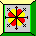

0:00 / 0:00

Quis fazer esse player com algumas músicas que eu curto ouvir/escutar. Fique à vontade para usar esse modelo/template de Player de música com a finalidade que você quiser! basta ver a parte dele no código HTML, e os códigos CSS e JavaScript. Apenas peço para que deixe os créditos para mim.
Caso você queira, poderá contribuir com este site doando um pequeno valor que partir de você, mas fica a seu critério, claro.
Aceitamos todos esses tipos de cartões.
Por favor, não clique nos Banners do site se não tiver interesse!